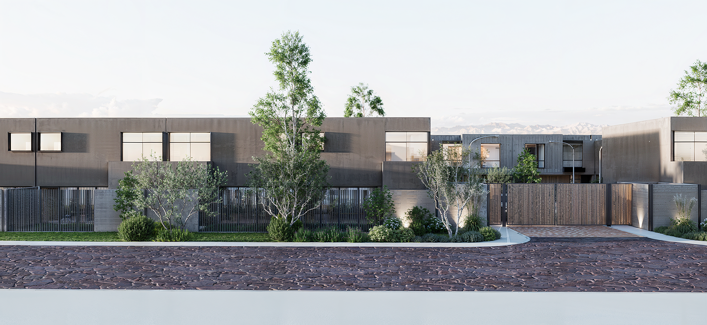
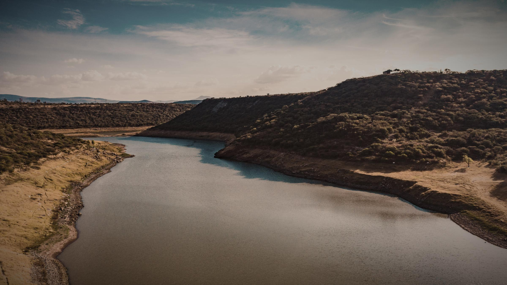
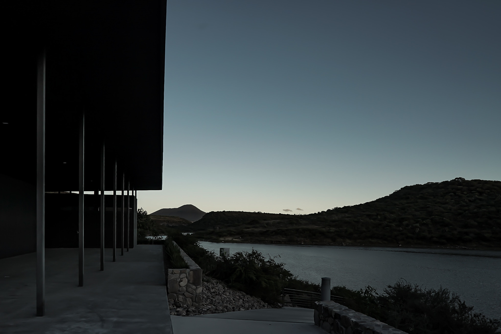

CAÑADAS DEL LAGO · QUERÉTARO
Hay lugares.
Y hay formas
de vivir.
Arquitectura que inspira. Naturaleza que abraza.
Descubre tu próximo hogar en Lago Sur.
01 / LA ESENCIA DE LAGO SUR
UN HOGAR A TU RITMOEl privilegio de
volver a lo esencial.
Una comunidad de solo 30 residencias dentro de Cañadas del Lago, en Corregidora, Querétaro.
Espacios para conectar con los tuyos, disfrutar la serenidad del entorno y redescubrir el placer de estar en casa.
Conoce la propuesta de vida ↗
EL LUJO DE SENTIRTE LEJOS
Más cerca de la naturaleza.
Más cerca de ti.
La presa del Batán y la reserva ecológica
dan vida a un entorno que se siente diferente.
02 / TU PRÓXIMO HOGAR
DISEÑO PARA VIVIRLOBaikal.
Espacio para tu vida.
Una distribución que acompaña cada momento.
Detalles que hacen de una casa, tu hogar.
ARQUITECTURA CONTEMPORÁNEA
Hecho para
habitarse.
- Cocina equipada y área de lavado
- Recámara principal con vestidor y balcón
- Family room para compartir
- Área de asador y bodega exterior
- Estacionamiento para 2 autos
Imágenes y renders ilustrativos. Características y disponibilidad sujetas a confirmación con el equipo comercial.
UNA PERSPECTIVA MÁS PERSONAL
EXPERIENCIA BAIKALRecórrela.
Imagínate dentro.
Los espacios se entienden mejor cuando los vives.
Acércate a la arquitectura y descubre tu próximo hogar.
03 / MÁS VIDA, CADA DÍA
DENTRO DE CAÑADAS DEL LAGOTu día a día,
extraordinario.
Muévete. Comparte. Desconéctate.
Espacios que invitan a disfrutar de lo que más te gusta, cerca de casa.
Algunas amenidades pueden tener costo adicional. Consulta las condiciones de acceso.
Descubre la experiencia completa ↗
Disfruta el tuyo.
04 / EL LUGAR CORRECTO
CORREGIDORA · QUERÉTAROEn conexión
con todo.
La tranquilidad de Cañadas del Lago, con escuelas, comercios y servicios que acompañan la vida de tu familia.
Tiempos de referencia publicados en el sitio actual; pueden variar según tránsito y ruta.
Agenda tu visita privada ↗05 / TU HISTORIA COMIENZA AQUÍ
Imagina tu vida
en Lago Sur.
Da el primer paso. Déjanos tus datos para solicitar información sobre el modelo Baikal o una visita al desarrollo.
30 residencias. Una nueva forma de vivir.
CADA DETALLE, MÁS CLARO
Antes de conocernos.
¿Dónde se encuentra Lago Sur? +
Dentro de Cañadas del Lago, en Corregidora, Querétaro, en el entorno de la presa del Batán.
¿Cómo son las residencias? +
El modelo Baikal cuenta con 195 m² de construcción, 3 recámaras con baño completo, cocina equipada, family room y estacionamiento para 2 autos. Consulta los detalles y la disponibilidad con el equipo comercial.
¿Cómo puedo conocer precios y agendar una visita? +
Completa el formulario seleccionando tu interés o comunícate por teléfono. El equipo comercial podrá confirmar precios, disponibilidad y horarios para tu visita.